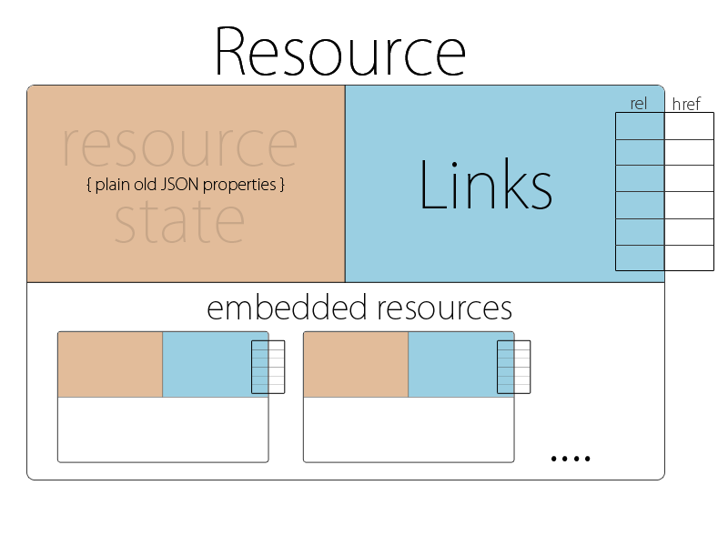

Join the Hypertext Application Language discussion group by visiting the group's home page.
HAL is a lean, domain-agnostic hypermedia type in both JSON and XML, and is designed specifically for exposing RESTful hypermedia APIs.
Essentially, HAL provides a set of conventions for expressing hyperlinks to, and embeddedness of, related resources - the rest of a HAL representation is just plain old JSON or XML.
HAL is a bit like HTML for machines, in that it is domain-agnostic and is capable of driving any hypertext application. The difference is that HTML is intended for presenting a graphical hypertext interface to a 'human actor', whereas HAL is intended for presenting a machine hypertext interface (aka. REST API) to be consumed by 'automated actors'.
This document contains a formalised specification of HAL. For a friendlier, more pracitcal introduction to HAL you can read this article: JSON Linking with HAL
HAL has two main components: Resources and Links. Resources have their own state, links, and embedded resources (which are resources in their own right). Links primarily map link relations to URIs in a key/value fashion. Below is an image illustrating this information model:
HAL is a media type with which applications are meant to be developed and exposed as sets of traversable link relations.
Instead of using linkless JSON/XML or developing a custom media type, you can use HAL and focus on designing the link relations which drive your application.
HAL encourages the use of link relations to:
Here is how you could represent a collection of orders with the JSON variant of HAL:
Here is the same example using the XML variant of HAL:
An implementation is not compliant if it fails to satisfy one or more of the MUST or REQUIRED level requirements. An implementation that satisfies all the MUST or REQUIRED level and all the SHOULD level requirements is said to be "unconditionally compliant"; one that satisfies all the MUST level requirements but not all the SHOULD level requirements is said to be "conditionally compliant."
The key words "MUST", "MUST NOT", "REQUIRED", "SHALL", "SHALL NOT", "SHOULD", "SHOULD NOT", "RECOMMENDED", "MAY", and "OPTIONAL" in this document are to be interpreted as described in RFC 2119.
HAL provides hypertext capabilities via two elements:
For expressing the embedded nature of a given part of the representation.
For expressing 'outbound' hyperlinks to other, related URIs.
The Resource and Link elements share the following attributes:
REQUIRED
For indicating the target URI.
@href corresponds with the 'Target IRI' as defined in Web Linking [RFC 5988]
REQUIRED
For identifying how the target URI relates to the 'Subject Resource'. The Subject Resource is the closest parent Resource element.
This attribute is not a requirement for the root element of a HAL representation, as it has an implicit default value of 'self'
@rel corresponds with the 'relation parameter' as defined in Web Linking [RFC 5988]
@rel attribute SHOULD be used for identifying Resource and Link elements in a HAL representation.
OPTIONAL
For distinguishing between Resource and Link elements that share the same @rel value. The @name attribute SHOULD NOT be used exclusively for identifying elements within a HAL representation, it is intended only as a 'secondary key' to a given @rel value.
Note: the following attributes have corresponding target attributes' as defined in Web Linking [RFC 5988]
OPTIONAL
For indicating what the language of the result of dereferencing the link should be.
OPTIONAL
For labeling the destination of a link with a human-readable identifier.
The following are attribute definitions applicable only to HAL's Link element.
REQUIRED
This attribute MAY contain a URI template. Whether or not this is the case SHOULD be indicated to clients by the @rel value.
The following are attribute definitions applicable only to HAL's Resource element.
REQUIRED
Content embedded within a Resource element MAY be a full, partial, summary, or incorrect representation of the content available at the target URI. Applications which use HAL MAY clarify the integrity of specific embedded content via the description of the relevant @rel value.
The root of a HAL representation MUST be a Resource with an href that corresponds to the effective request URI of the resource being represented.
Note: click the following for a more accessible explanation of HAL in JSON
Further details on the JSON variant of HAL:
XML
JSON
Link relation values used in HAL representations SHOULD be URIs which, when dereferenced, provide relevant details. This helps to improve the discoverability of your application.
For XML, the CURIE syntax MAY be used for brevity.
For JSON, a 'curie' link can be used like so:
{ ... '_links' : { 'curie': { 'href' : 'http://example.com/rels/{relation}', 'title': 'ex' }, ... }, ... }
HAL representations SHOULD NOT make extended or modified useage of HAL's reserved elements. If you find that you have a requirement for clarifications, fixes, or additional features, please consider joining the discussion group, where you can highlight issues and propose changes to this specification.
In a situation in which your proposed feature or change is not accepted then you could either violate this advice and 'silently extend' HAL for your application or, alternatively, create a separate media type extending HAL. A separate media type is the approach taken for an extension that allows form-like, templated writes: it was decided that it would not be included in HAL because it added too much complexity. As a result, it will be estbalished as a separate media type SHAL (application/shal+xml), currently under development.
Thanks to Darrel Miller for adopting HAL early-on and providing quality feedback.
Thanks to mike amundsen for his great suggestions and occasional zen-slaps.
Media type parameter for 'edge processability' and/or version?